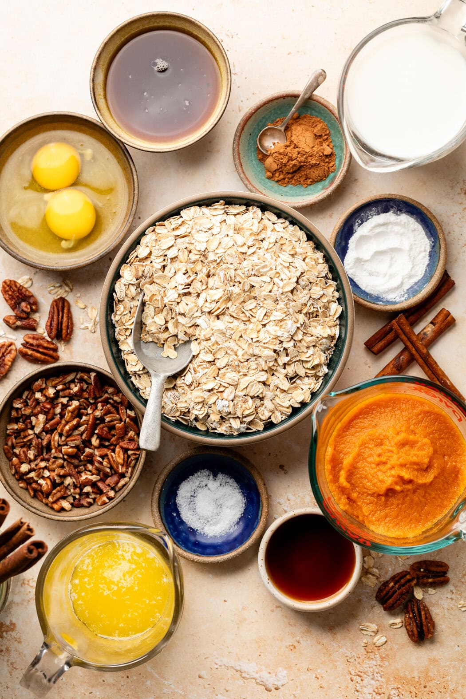
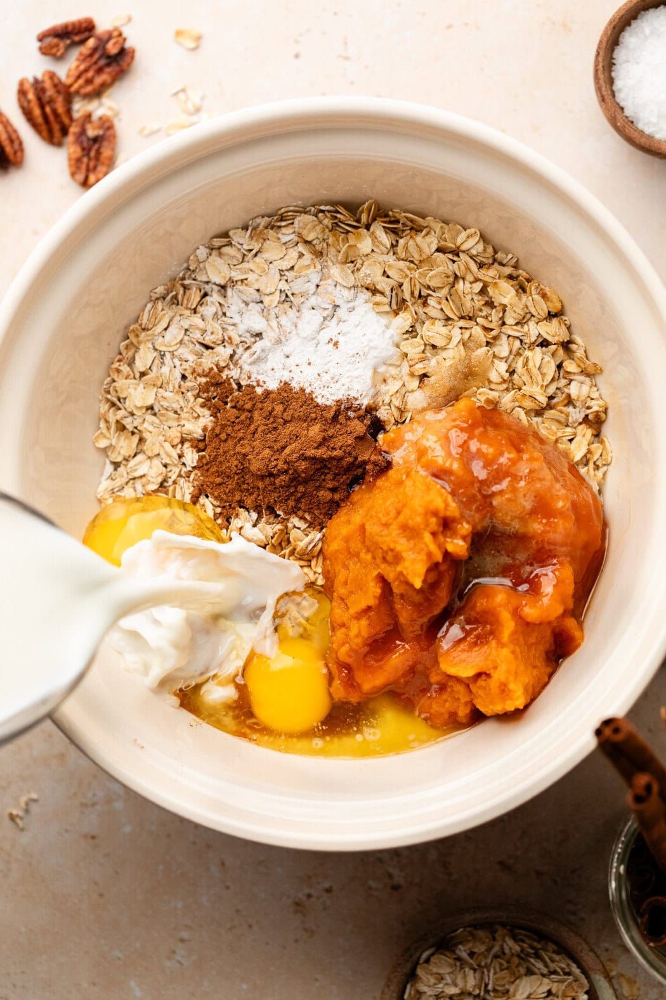
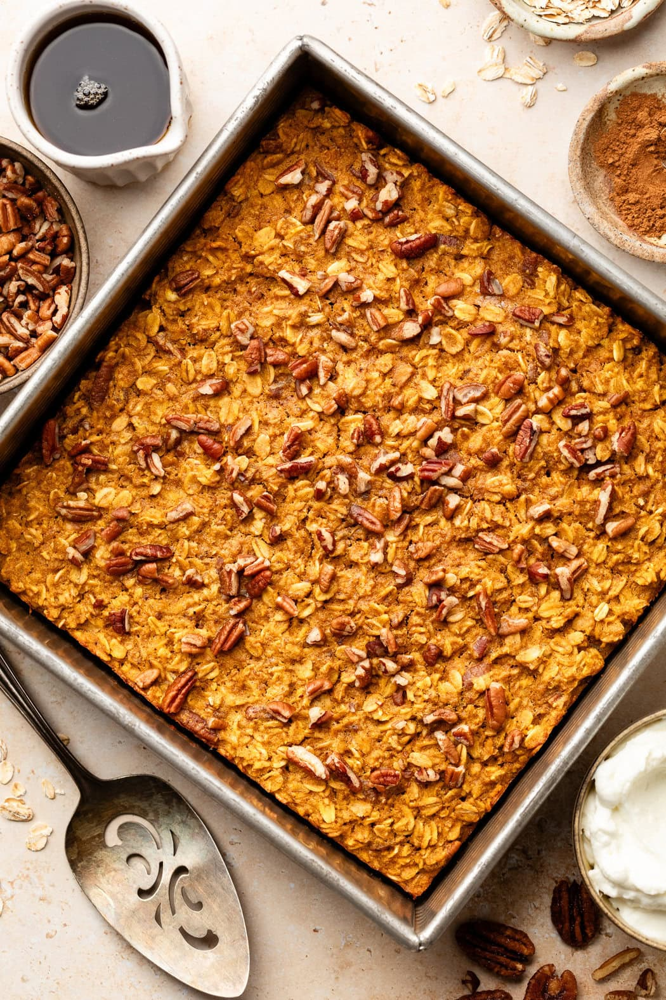

Ingredients
- 2 ¾ cups old fashioned rolled oats (certified gluten-free, if needed)
- 2 teaspoons pumpkin pie spice
- 1 teaspoon baking powder
- ¼ teaspoon fine salt
- 1 cup pumpkin puree
- 1 cup milk of choice
- 2 large eggs
- ⅓ cup pure maple syrup or honey
- ¼ cup unsalted butter or coconut oil, melted
- 2 teaspoons pure vanilla extract
- ½ cup chopped pecans, toasted + more for topping (omit for nut-free)
Directions
- Preheat the oven to 375℉. Grease a 9×9-inch baking dish with butter or with oil spray. Set aside.
- In a large bowl, combine the dry ingredients (the oats, pumpkin pie spice, baking powder, and salt). Next, stir in the wet ingredients (the pumpkin puree, milk, eggs, maple syrup, butter, and vanilla). Stir until well combined.
- Transfer the batter to the prepared baking dish. Top with additional toasted pecans.
- Bake for 30-34 minutes or until the center is set and a toothpick inserted in the center comes out clean.
- Let sit for 5 minutes before cutting.
- Top servings with a dollop of yogurt or whipped topping, a drizzle of maple syrup, and/or a dash of pumpkin pie spice.